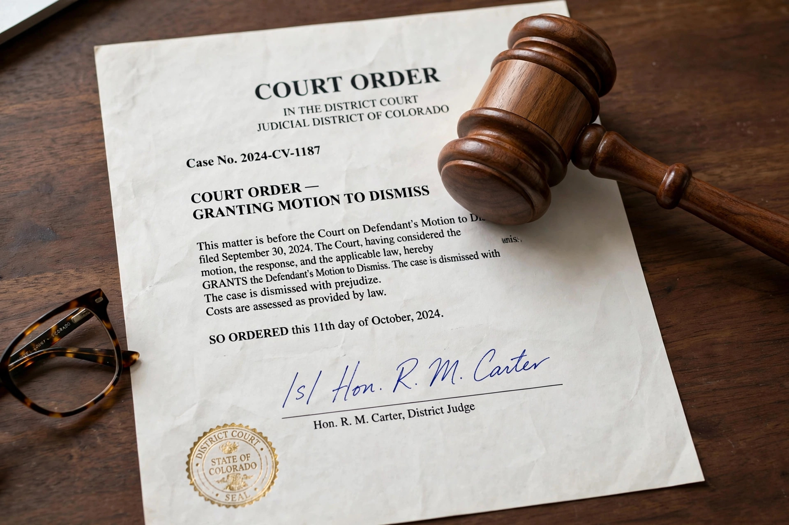

A court order is a proclamation by a judge (or panel of judges) that defines the legal relationships between the parties to a hearing, a trial, an appeal or other court proceedings. Such ruling requires or authorises the carrying out of certain steps by one or more parties. A court order must be signed by a judge; some jurisdictions may also require it to be notarised.

Orders include temporary restraining orders, preliminary and permanent injunctions, search warrants, subpoenas, discovery and scheduling orders, protective orders, garnishment and attachment orders, child custody and support orders, and final orders embodying a judgment. Interlocutory orders decide interim matters and are generally not immediately appealable; final orders end the case.
Disobedience of a lawful court order may be punished as contempt of court, with fines or imprisonment, and orders may be enforced by marshals, sheriffs or execution against property. Orders generally bind parties who have notice, and sometimes their agents and those acting in concert with them.